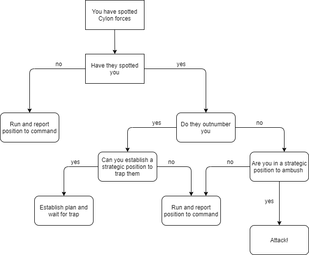

Combat Field Guide
If you find yourself in a position where combat with a Cylon or group of Cylons is a possibility, you must act swiftly and decisively. Immediate action will ensure that you are in the best possible position to respond to the threat.
The three possible actions in combat are to flee, to catch the Cylons in a trap, or to engage directly. These options are listed in order of preference, with fleeing almost always being the best choice.
The following field guides will provide you a quick way to decide which action you should take in a Cylon encounter:
Figure 7.3: Cylon Encounter Field Guide
Memorize the contents of this field guide, as you will not have time to consult it in a combat scenario. Knowing this guide will be the difference between survival and death.